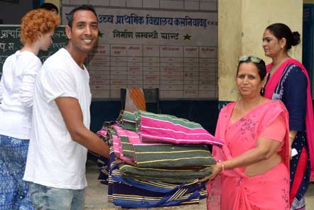
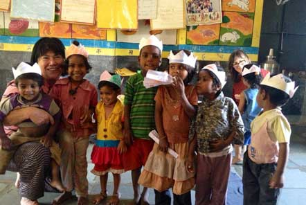
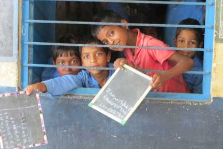

Posted on 7th Nov 2017 in My gap-year, Volunteer Abroad, India, Pod Volunteer
In some countries young people are encouraged to work or travel for a year between finishing high school and starting university studies. Discuss the advantages and disadvantages for young people to do this.
It is quite common these days for young people in many countries to have a break from studying after graduating from high school. This trend is not restricted to rich students who have the money to travel, but is also evident among poorer students who choose to work and become economically independent for a period of time.
The reasons for this trend may involve the recognition that a young adult who passes directly from school to university is rather restricted in terms of general knowledge and experience of the world. By contrast, those who have spent some time earning a living or traveling to other places have a broader view of life and better personal resources to draw on. They tend to be more independent, which is a very important factor in academic study and research, as well as giving them an advantage in terms of coping with the challenges of student life.
However, there are certainly dangers in taking time off at that important age. Young adults may end up never returning to their studies or finding it difficult to readapt to an academic environment. They may think that it is better to continue in a particular job, or to do something completely different from a university course. But overall, I think this is less likely today, when academic qualifications are essential for getting a reasonable career.
My view is that young people should be encouraged to broaden their horizons. That is the best way for them to get a clear perspective of what they are hoping to do with their lives and why. Students with such a perspective are usually the most effective and motivated ones and taking a year off may be the best way to gain this.